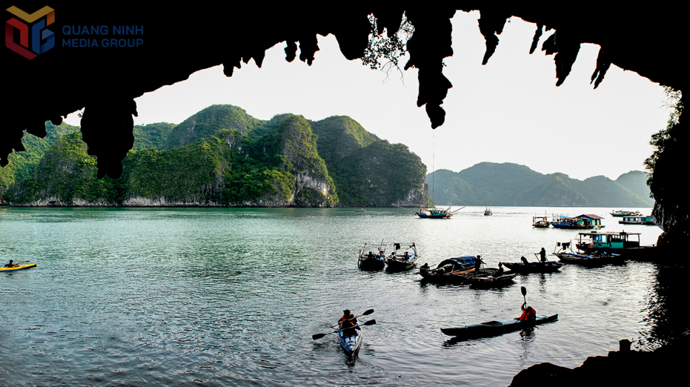

Vẻ đẹp thiên nhiên
Vịnh Hạ Long nổi tiếng với hàng nghìn đảo đá vôi có hình dáng kỳ thú. Trong đó, nhiều khối núi xuất hiện các hố xuyên thủng tự nhiên được ví như những "mắt thần" giữa biển trời.
Trải qua hàng triệu năm phong hóa, nước mưa và sóng biển đã tạo nên các hang động, mái vòm và lỗ xuyên đá độc đáo. Những "mắt thần" này là minh chứng cho quá trình kiến tạo địa chất lâu dài của khu vực.
Khi ánh nắng chiếu qua các khe đá, khung cảnh trở nên huyền ảo, tạo nên những góc nhìn ấn tượng cho du khách và nhiếp ảnh gia.

Hằng năm, Vịnh Hạ Long đón hàng triệu lượt khách trong và ngoài nước. Các tuyến tham quan bằng tàu giúp du khách chiêm ngưỡng rõ nét vẻ đẹp của những đảo đá vôi và hệ thống hang động nổi tiếng.
Không chỉ có giá trị về cảnh quan, khu vực này còn mang ý nghĩa quan trọng về địa chất, sinh học và văn hóa, góp phần làm nên danh tiếng của Quảng Ninh trên bản đồ du lịch thế giới.
← Quay lại trang chủ